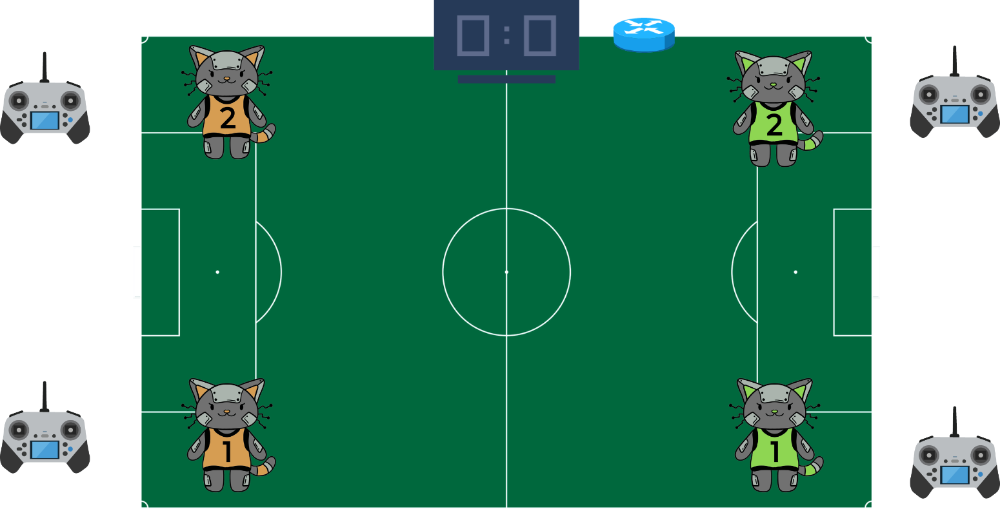

1. Presentación del Proyecto
2. Laboratorio de Redes
Modifica las direcciones IPv4 de cada dispositivo dentro del rango de su subred (Equipo A: .1 a .6, Equipo B: .9 a .14, Marcador: .17 a .18), ajusta el ruido del medio físico y observa el recorrido completo en la pila OSI.
Medio Físico (Canal RF)
Si el porcentaje de ruido es mayor al azar generado, la trama sufre alteración de bits. Falla el Checksum (L2) y el paquete se descarta.
Equipo A — Naranja
Marcador
Equipo B — Verde

Estado OSI del Último Paquete (Animado)
- 7. Aplicación
- 6. Presentación
- 5. Sesión
- 4. Transporte
- 3. Red
- 2. Enlace
- 1. Física
- 7. Aplicación
- 6. Presentación
- 5. Sesión
- 4. Transporte
- 3. Red
- 2. Enlace
- 1. Física
Diario de Red
Cálculos
Checksum
Tablas de Direccionamiento VLSM
1. Cálculo VLSM por red
| Red | Hosts | Hosts + 2 | 2n | n | Máscara |
|---|---|---|---|---|---|
| Equipo A | 5 | 7 | 8 | 3 | /29 (255.255.255.248) |
| Equipo B | 5 | 7 | 8 | 3 | /29 (255.255.255.248) |
| Marcador | 2 | 4 | 4 | 2 | /30 (255.255.255.252) |
2. Rangos de red
| Red | Nombre de red | Primer host | Último host | Broadcast |
|---|---|---|---|---|
| Equipo A | 192.168.1.0 | 192.168.1.1 | 192.168.1.6 | 192.168.1.7 |
| Equipo B | 192.168.1.8 | 192.168.1.9 | 192.168.1.14 | 192.168.1.15 |
| Marcador | 192.168.1.16 | 192.168.1.17 | 192.168.1.18 | 192.168.1.19 |
3. Asignación por dispositivo
| Dispositivo | IP | Máscara | Gateway | MAC |
|---|---|---|---|---|
| Control A1 | 192.168.1.1 | 255.255.255.248 | N/A | AA:BB:CC:00:00:11 |
| Control A2 | 192.168.1.2 | 255.255.255.248 | N/A | AA:BB:CC:00:00:12 |
| Robot A1 | 192.168.1.3 | 255.255.255.248 | 192.168.1.6 | AA:BB:CC:00:00:01 |
| Robot A2 | 192.168.1.4 | 255.255.255.248 | 192.168.1.6 | AA:BB:CC:00:00:02 |
| Control B1 | 192.168.1.9 | 255.255.255.248 | N/A | AA:BB:CC:00:00:21 |
| Control B2 | 192.168.1.10 | 255.255.255.248 | N/A | AA:BB:CC:00:00:22 |
| Robot B1 | 192.168.1.11 | 255.255.255.248 | 192.168.1.14 | AA:BB:CC:00:00:03 |
| Robot B2 | 192.168.1.12 | 255.255.255.248 | 192.168.1.14 | AA:BB:CC:00:00:04 |
| Marcador | 192.168.1.18 | 255.255.255.252 | 192.168.1.17 | AA:BB:CC:00:00:99 |
3. Simulación en Cisco Packet Tracer
Nota sobre la topología en Cisco Packet Tracer
En Cisco Packet Tracer se utilizó un Router 2911 conectado a dos Access Points (AP_EquipoA y AP_EquipoB) para representar las interfaces inalámbricas de cada subred VLSM (/29 y /30), dado que el router simula el enrutamiento entre las subredes y los APs proveen el medio inalámbrico para los dispositivos (robots y controles). En el modelo conceptual, esto se simplifica como un router inalámbrico único.
Configuraciones aplicadas en Cisco Packet Tracer
| Dispositivo | Interfaz / SSID | Dirección IPv4 | Máscara de Subred | Default Gateway |
|---|---|---|---|---|
| Router 2911 | GigabitEthernet0/0 (Lado A) | 192.168.1.6 | 255.255.255.248 | N/A |
| Router 2911 | GigabitEthernet0/1 (Lado B) | 192.168.1.14 | 255.255.255.248 | N/A |
| Router 2911 | GigabitEthernet0/2 (Lado Marcador) | 192.168.1.17 | 255.255.255.252 | N/A |
| Control A1 | SSID: AP_EquipoA (Wireless) | 192.168.1.1 | 255.255.255.248 | 192.168.1.6 |
| Control A2 | SSID: AP_EquipoA (Wireless) | 192.168.1.2 | 255.255.255.248 | 192.168.1.6 |
| Robot A1 | SSID: AP_EquipoA (Wireless) | 192.168.1.3 | 255.255.255.248 | 192.168.1.6 |
| Robot A2 | SSID: AP_EquipoA (Wireless) | 192.168.1.4 | 255.255.255.248 | 192.168.1.6 |
| Control B1 | SSID: AP_EquipoB (Wireless) | 192.168.1.9 | 255.255.255.248 | 192.168.1.14 |
| Control B2 | SSID: AP_EquipoB (Wireless) | 192.168.1.10 | 255.255.255.248 | 192.168.1.14 |
| Robot B1 | SSID: AP_EquipoB (Wireless) | 192.168.1.11 | 255.255.255.248 | 192.168.1.14 |
| Robot B2 | SSID: AP_EquipoB (Wireless) | 192.168.1.12 | 255.255.255.248 | 192.168.1.14 |
| Marcador | Física (Cable a Router) | 192.168.1.18 | 255.255.255.252 | 192.168.1.17 |